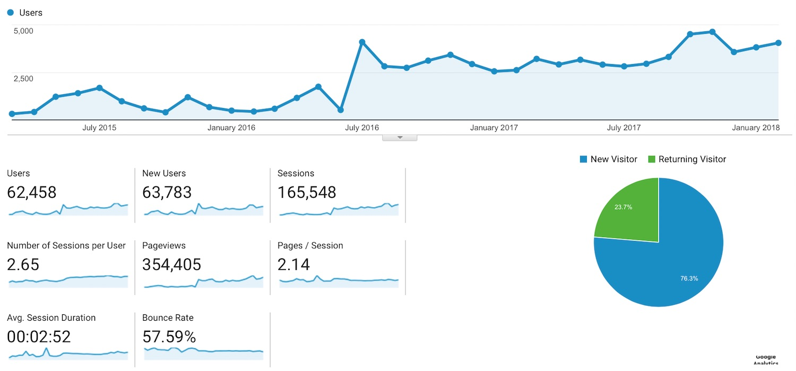

I posted this 👇 three years ago... already
After nights and weekends here it is: http://t.co/mjvEhOWtaN pic.twitter.com/E11pt5XYZM
— Vincent Sarago (@_VincentS_) March 18, 2015
Some of you might not know it so I'll introduce myself.
My name is Vincent Sarago, I'm a self taught develloper (but have a Master degree in Earth Sciences). I started this website as an hobby and will keep it as it.
I'm pretty sure I say that every year, but time flies. To me it feels as it was yesterday. It was a time were I'll spend nights setting my raspberry-pi at home to create my own web server but also the time I was starting to learn how to write HTML and Javascript.
History
I started RemotePixel because I wanted to learn and explore how to ease access to satellite imagery. Landsat 8 data were a key point on my motivation. With NASA releasing data for free, this was a really a revolution but there was still some stuff to be done to really democratize it. My first 'big' project (a day of landsat 8) was really based on the idea to give a simple access to landsat data and to able anyone to find astonishing images. But that was just a begining...
Month after month I had new project ideas, and I tried to built the ones I was capable of.
RemotePixel is a big part of my life now, and I'm never out of ideas about how to combine Remote Sensing and Web, so be sure that there will be others anniversaries.
This is from RemotePixel's first anniversary blog post. Sure some things have happenned since but I'm still amazed (and/or sad) to see how some 3 years old projects are still relevant today.
Stats
THANK YOU!!!
- Date: April 2018
- Category: History